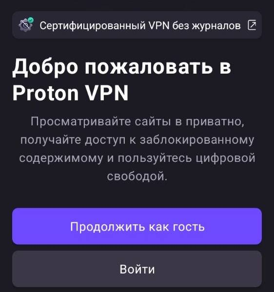
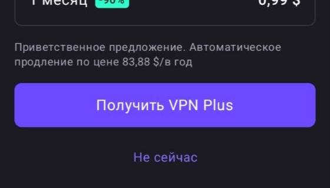
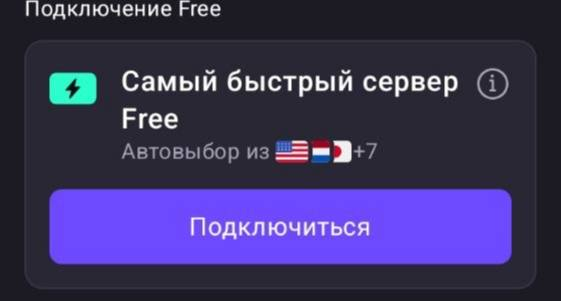

Тут туториал как скачать Standoff чит из Телеграма
Всё по шагам, просто и бесплатно
Чтобы зайти в Телеграм и скачать чит — нужен VPN.
Если у тебя уже есть VPN — листай ниже сразу к кнопке «Скачать чит».
Скачиваем Proton VPN (полностью бесплатный для базового использования)
Play Market (Android) App Store (iPhone)
1. Открываем приложение → нажимаем «Продолжить как гость»

2. Нажимаем «Не сейчас»

3. Жмём «Подключиться» и даём разрешение на VPN
Прямая ссылка на канал с читом для Standoff 2